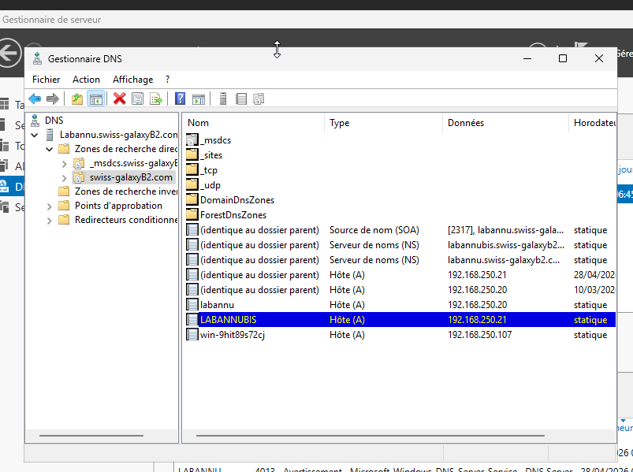
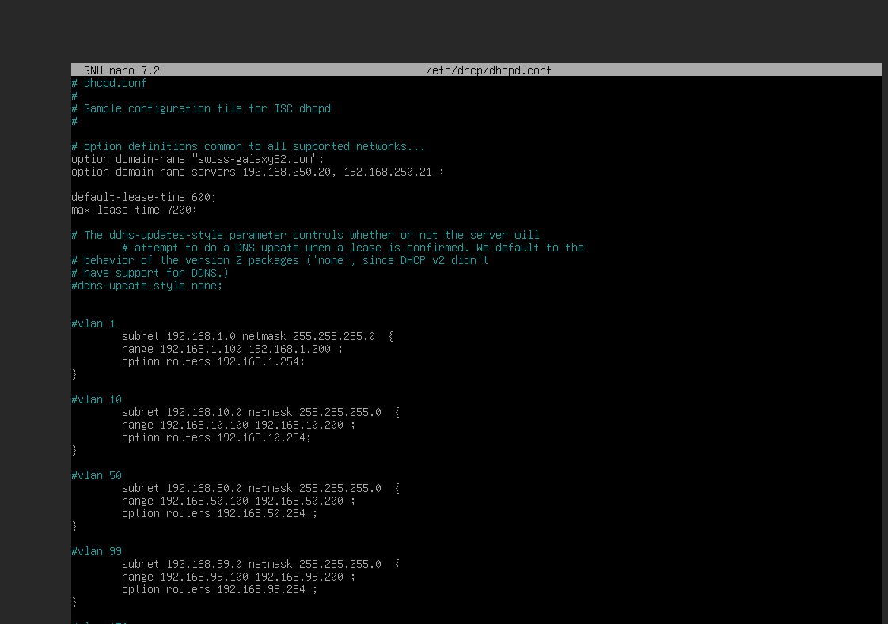
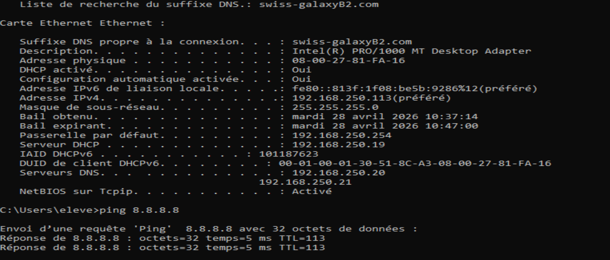
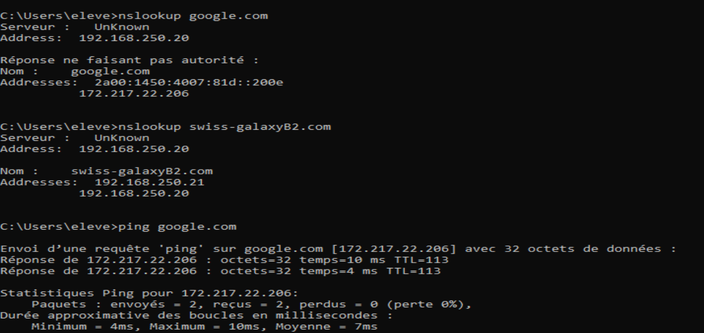
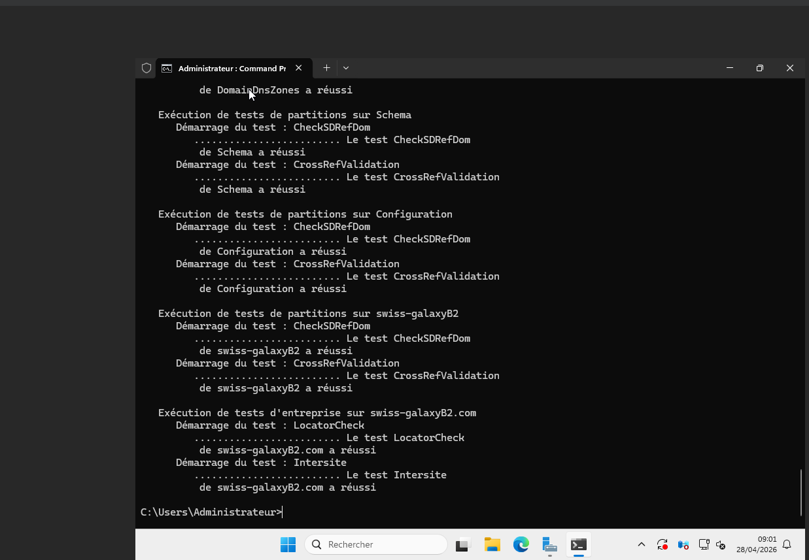

Contexte
Objectif de la mission
Le réseau GSB dispose d’une segmentation en VLAN et d’un pare-feu Stormshield assurant le routage. L’objectif de cette mission est de rendre l’infrastructure exploitable par des postes Windows en centralisant l’authentification, la résolution de noms et la distribution des paramètres réseau.
Besoin
Problématique technique
Sans annuaire, les comptes utilisateurs et les postes restent gérés localement. Sans DNS interne, les services Active Directory ne peuvent pas être localisés correctement. Sans DHCP, les postes doivent être configurés manuellement, ce qui augmente les risques d’erreur d’adresse IP, de passerelle ou de DNS.
Solution
Réponse mise en œuvre
La solution repose sur deux serveurs Windows Server 2025 : LABANNU comme contrôleur de domaine principal et LABANNUBIS comme contrôleur de domaine secondaire. Les services AD DS et DNS sont configurés sur Windows Server 2025, tandis que le service DHCP est assuré par un serveur Debian, puis l’ensemble est validé depuis un client Windows 10.
Réalisation
Étapes principales
Préparation des serveurs
Configuration réseau des serveurs dans le VLAN 250, renommage des machines et vérification de la connectivité avec la passerelle 192.168.250.254.
Déploiement Active Directory
Installation du rôle AD DS, promotion du serveur LABANNU en contrôleur de domaine et création du domaine swiss-galaxyB2.com.
Redondance du domaine
Ajout du serveur LABANNUBIS au domaine puis promotion en contrôleur de domaine secondaire afin d’assurer une continuité de service minimale pour l’annuaire et le DNS.
Configuration DNS
Mise en place du DNS intégré à Active Directory, vérification de la zone du domaine et ajout d’un redirecteur DNS vers 8.8.8.8 pour la résolution externe.
Configuration DHCP
Configuration du service DHCP sous Debian avec des étendues pour les VLAN du contexte GSB. Les options distribuées incluent la passerelle du VLAN, le suffixe DNS swiss-galaxyB2.com et les serveurs DNS internes.
Validation client
Contrôle depuis un client Windows 10 avec ipconfig /all, nslookup, tests de ping et vérification de l’accès au domaine.
Synthèse technique
Services configurés
| Élément | Configuration retenue | Validation réalisée |
|---|---|---|
| Contrôleur de domaine principal | LABANNU — IP : 192.168.250.20 | Domaine swiss-galaxyB2.com créé et disponible |
| Contrôleur de domaine secondaire | LABANNUBIS — IP : 192.168.250.21 | Réplication AD/DNS vérifiée |
| DNS interne | DNS intégré à Active Directory + redirecteur 8.8.8.8 | Résolution interne et externe testée |
| DHCP | Serveur Debian — IP : 192.168.250.19, étendues pour les VLAN du contexte GSB | Bail obtenu automatiquement par le client |
| Client de test | Windows 10 intégré au réseau GSB | Paramètres IP, passerelle, DNS et suffixe de domaine visibles |
Administration
Éléments produits
- Contrôleur de domaine principal pour le domaine GSB.
- Contrôleur de domaine secondaire pour la redondance.
- Serveur DNS interne associé au domaine Active Directory.
- Serveur DHCP sous Debian distribuant automatiquement les paramètres réseau.
- Utilisateurs et groupes Active Directory de test.
Tests
Commandes de validation
ipconfig /all: contrôle du bail DHCP et des DNS reçus.nslookup: test de résolution de noms.ping: vérification de la connectivité réseau.dcdiag: diagnostic du contrôleur de domaine.repadmin /replsummary: vérification de la réplication AD.
Preuves visuelles
Captures de validation AD, DNS et DHCP
Les captures suivantes résument les éléments les plus importants du projet : résolution DNS, configuration DHCP, obtention d’un bail client, connectivité avec les contrôleurs de domaine et diagnostic Active Directory.

swiss-galaxyB2.com contient les enregistrements des contrôleurs de domaine LABANNU et LABANNUBIS.
dhcpd.conf définit le nom de domaine, les serveurs DNS internes et les étendues par VLAN.
192.168.250.19, les DNS 192.168.250.20 / 192.168.250.21 et valide l’accès Internet.
nslookup valide la résolution de swiss-galaxyB2.com et la résolution externe via le DNS interne.
192.168.250.21.
dcdiag valide les principaux tests du contrôleur de domaine et de la configuration AD/DNS.Pièces jointes
Documents associés
{kind=link}
{kind=link}
{kind=link}
Conclusion
Bilan
La mission met en place le socle serveur nécessaire au fonctionnement du réseau GSB. Les postes clients peuvent s’appuyer sur le domaine pour l’authentification, utiliser la résolution DNS interne et obtenir automatiquement une configuration IP cohérente avec leur VLAN.